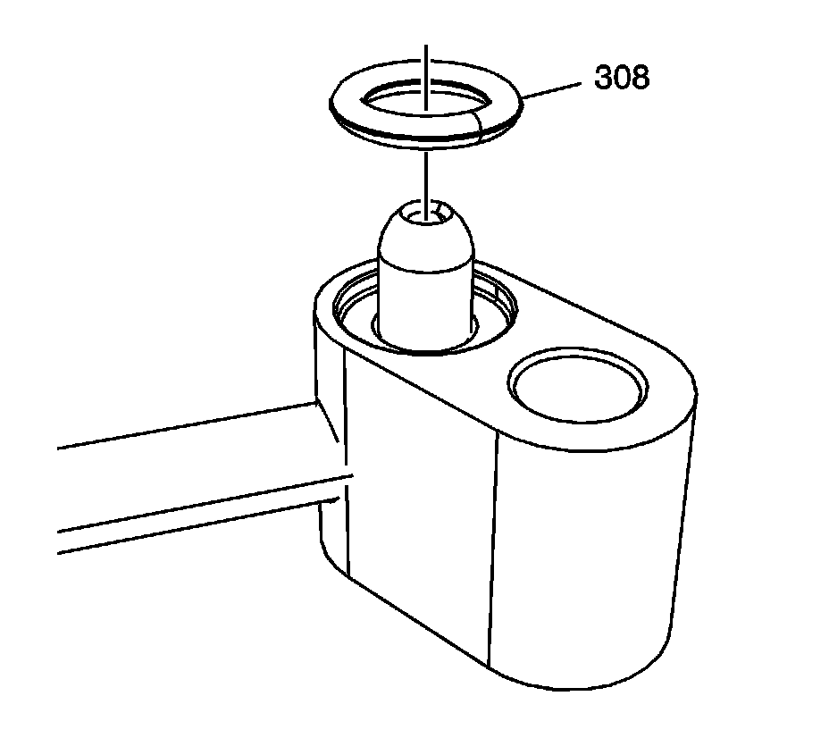
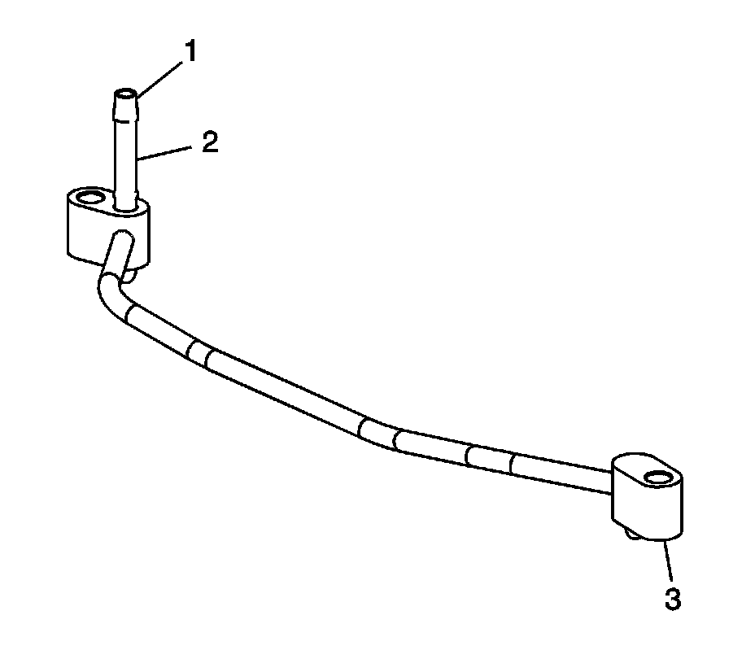

64. Engine Coolant Air Bleed Pipe and Hole Cover Cleaning and Inspection
Engine Coolant Air Bleed Pipe and Hole Cover Cleaning and Inspection

Important: Do not use the engine coolant air bleed pipe and cover seals again. Upon installation of the pipe and covers, install NEW seals.
1. Remove the seals (308) from the pipe and covers.

2. Clean the pipe and covers in solvent.
Caution: Refer to Safety Glasses and Compressed Air Caution.
3. Dry the pipe and covers with compressed air.
4. Inspect the pipe and covers for restrictions within the pipe (1) or damaged sealing surfaces (2, 3).